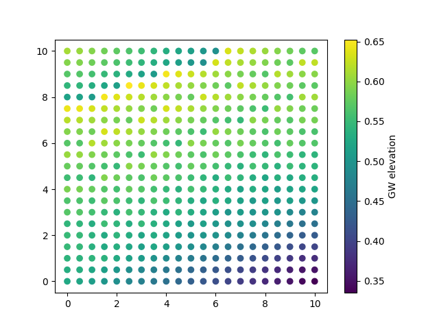
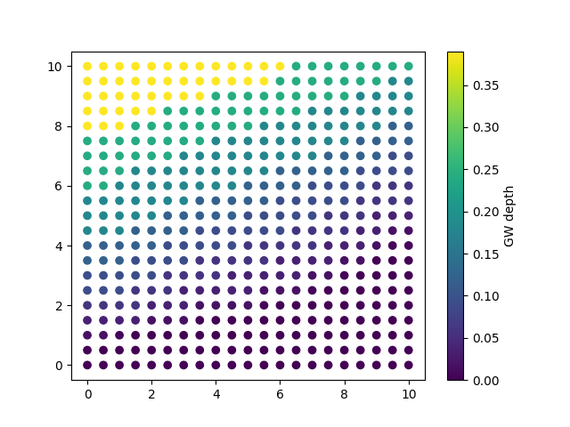

Note
Go to the end to download the full example code
Plot Water Table#
Weill, S., et al. « Coupling Water Flow and Solute Transport into a Physically-Based Surface–Subsurface Hydrological Model ». Advances in Water Resources, vol. 34, no 1, janvier 2011, p. 128‑36. DOI.org (Crossref), https://doi.org/10.1016/j.advwatres.2010.10.001.
This example shows how to use pyCATHY object to plot the water table for each node points.
Estimated time to run the notebook = 5min
Here we need to import cathy_tools class that control the CATHY core files preprocessing and processing We also import cathy_plots to render the results
from pyCATHY import cathy_tools
from pyCATHY.plotters import cathy_plots as cplt
from pyCATHY.importers import cathy_inputs as in_CT
from pyCATHY.importers import cathy_outputs as out_CT
import pyCATHY.meshtools as mt
if you add True to verbose, the processor log will be printed in the window shell
path2prj = "weil_exemple_outputs_WaterTable_plot" # add your local path here
simu = cathy_tools.CATHY(dirName=path2prj)
# ```{note}
# Here is a note
# ```
🏁 Initiate CATHY object
# simu.update_parm(NUMVP=3, NODVP=[337,338,339,440,441,442],
# NR=3, ID_NR=[337,338,339,440,441,442],
# # NUM_QOUT=3, ID_QOUT=[440,441,442]
# )
simu.run_processor(TRAFLAG=0, verbose=True)
🔄 update parm file
🔄 Update hap.in file
🔄 update dem_parameters file
🛠 Recompile src files [0s]
🍳 gfortran compilation [6s]
😔 Cannot find the new processsor
👟 Run processor
b'\n\n IPRT1=3: Program terminating after output of X, Y, Z coordinate values\n'
b''
import numpy as np
d_sw, t_sw = simu.read_outputs('sw')
layers_top, layers_bottom = mt.get_layer_depths(simu.dem_parameters)
xyz_df = simu.read_outputs('xyz')
time = 3
water_table_bool = (d_sw == 1)
sat_elevation = np.vstack([d_sw[time,:],xyz_df[['x','y','z']].to_numpy().T]).T
sat_elevation_select = sat_elevation[water_table_bool[time,:]]
def max_z_indices_for_duplicate_xy(xyz):
xy = xyz[:, :2] # Extract XY values from XYZ array
unique_xy = np.unique(xy, axis=0) # Get unique XY values
max_z_indices_list = []
for xy_value in unique_xy:
indices = np.where(np.all(xy == xy_value, axis=1))[0]
max_z_index = indices[np.argmax(xyz[indices, -1])]
max_z_indices_list.append(max_z_index)
return max_z_indices_list
max_z_indices_list = max_z_indices_for_duplicate_xy(sat_elevation[:,1:4])
topo = sat_elevation[max_z_indices_list]
max_z_indices_list = max_z_indices_for_duplicate_xy(sat_elevation_select[:,1:4])
sat_elevation_select_max = sat_elevation_select[max_z_indices_list]
import matplotlib.pyplot as plt
fig, ax = plt.subplots()
cb = ax.scatter(sat_elevation_select_max[:,1],
sat_elevation_select_max[:,2],
c=sat_elevation_select_max[:,3])
cbar = plt.colorbar(cb)
cbar.set_label('GW elevation')
fig, ax = plt.subplots()
cb = ax.scatter(sat_elevation_select_max[:,1],
sat_elevation_select_max[:,2],
c=topo[:,3]-sat_elevation_select_max[:,3]
)
cbar = plt.colorbar(cb)
cbar.set_label('GW depth')
# fig, ax = plt.subplots()
# ax.imshow(sat_depth_select_max[:,1],sat_depth_select_max[:,2])
- 
- 
simu.show(prop="hgsfdet")
simu.show(prop="dtcoupling", yprop="Atmpot-d")
/home/ben/Documents/GitHub/BenjMy/pycathy_wrapper/pyCATHY/importers/cathy_outputs.py:330: UserWarning: Input line 3 contained no data and will not be counted towards `max_rows=8174`. This differs from the behaviour in NumPy <=1.22 which counted lines rather than rows. If desired, the previous behaviour can be achieved by using `itertools.islice`.
Please see the 1.23 release notes for an example on how to do this. If you wish to ignore this warning, use `warnings.filterwarnings`. This warning is expected to be removed in the future and is given only once per `loadtxt` call.
dtcoupling = np.loadtxt(dtcoupling_file, skiprows=2, max_rows=2 + nstep)
simu.show(prop="hgraph")
simu.show(prop="cumflowvol")
To select another time step change the value in the function argument
cplt.show_vtk(
unit="pressure",
timeStep=1,
notebook=True,
path=simu.workdir + "/my_cathy_prj/vtk/",
)

plot pressure
cplt.show_vtk(
unit="saturation",
timeStep=1,
notebook=True,
path=simu.workdir + "/my_cathy_prj/vtk/",
)

physcial property not existing
simu.show_input(prop="root_map")
Total running time of the script: ( 0 minutes 9.819 seconds)